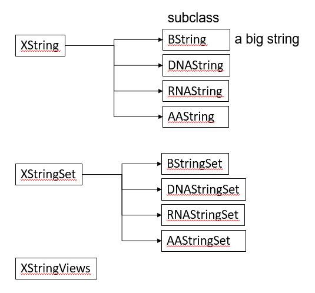
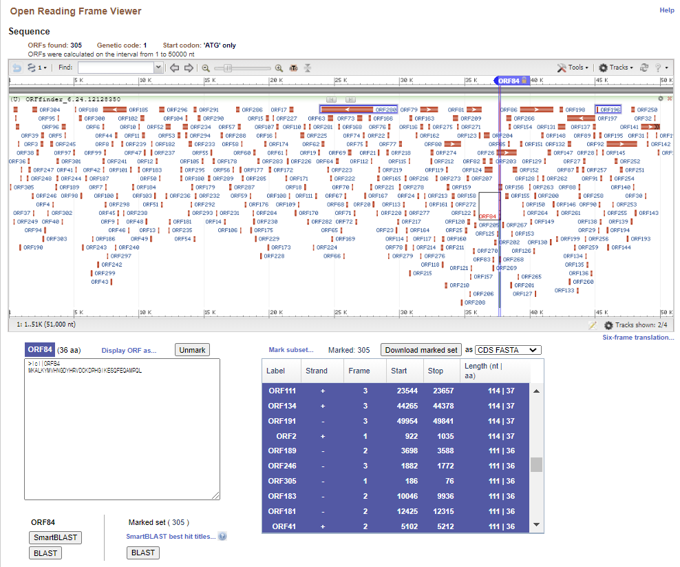

Chapter 7 Working with DNA sequences
서열을 이용한 분석은 Biostrings, IRanges/GenomicRanges 등 몇몇 핵심 패키지들에 기반해서 수행됩니다.
7.1 Biostrings
Biostrings는 DNA, RNA, amino acids와 같은 생물학적 string을 다루기 위한 다양한 함수를 제공하는 패키지 입니다. 특히 서열에서의 패턴 탐색이나 Smith-Waterman local alignments, Needleman-Wunsch global alignments 등의 서열 비교함수를 제공하여 간단한 서열 분석에 자주 활용되는 패키지 입니다 [@sippl1999biological]. 아래와 같이 설치할 수 있습니다.
if (!requireNamespace("BiocManager", quietly = TRUE))
install.packages("BiocManager")
BiocManager::install("Biostrings")library(Biostrings)Biostrings 패키지는 기본적으로 XString, XStringSet, XStringViews 3가지의 class를 정의하고 있습니다. XString은 DNA나 RNA, AA 등 생물학적 서열 한 가닥을 다루기위한 클래스이며 XStringSet은 여러 가닥을 다루기위한 클래스 입니다.

DNAString 함수를 이용해서 객체를 만들어낼 수 있으며 ‘A’, ‘C’, ‘G’, ‘T’ 외에 ‘-’ (insertion), ‘N’ 을 허용합니다.
dna1 <- DNAString("ACGT?")
dna1 <- DNAString("ACGT-N")
dna1[1]
dna1[2:3]
dna2 <- DNAStringSet(c("ACGT", "GTCA", "GCTA"))
dna2[1]
dna2[[1]]
dna2[[1]][1]다음 내장변수 들은 Biostrings 패키지를 로드하면 자동으로 저장되는 변수들로 생물학적 서열을 미리 정의해 놓았습니다. IUPAC (International Union of Pure and Applied Chemistry, 국제 순수·응용 화학 연합)
DNA_BASES
DNA_ALPHABET
IUPAC_CODE_MAP
GENETIC_CODE
위 변수들을 이용하면 다음처럼 sample() 함수를 이용해서 랜덤하게 DNA 서열을 얻을 수 있습니다. DNA_BASES가 4개 길이를 갖는 벡터인데 이 중 10개를 뽑으려면 replace=T로 해야 합니다.
x0 <- sample(DNA_BASES, 10, replace = T)
x0
s1 <- "ATG"
s2 <- "CCC"
s3 <- paste(s1, s2, sep="")
s3
x1 <- paste(x0, collapse="")
x1관련 함수는 Cheat sheat 참고
7.1.1 DNAString
DNAString class에서 length 함수는 핵산의 갯수를 (DNAStringSet 타입의 변수에서 length는 DNA 가닥의 갯수) 계산하며 핵산의 갯수는 nchar함수로 얻어낼 수 있습니다. toString은 DNAString 타입을 단순 문자열로 변환해주는 함수이며 상보서열, 역상보서열 등의 정보도 complement, reverseComplement 등을 사용하여 찾아낼 수 있습니다.
x0 <- paste(sample(DNA_BASES, 10, replace = T), collapse="")
x1 <- DNAString(x0)
class(x0)
class(x1)
length(x1)
toString(x1)
complement(x1)
Biostrings::complement(x1)
reverseComplement(x1)DNAString의 인덱싱은 vector (string)과 같으며 DNAStringSet은 list의 인덱싱과 같습니다.
## indexing
x1[1]
x1[1:3]
subseq(x1, start=3, end=5)
subseq(x1, 3, 5)
## letter frequency
alphabetFrequency(x1, baseOnly=TRUE, as.prob=TRUE)
letterFrequency(x1, c("G", "C"), as.prob=TRUE)7.1.2 DNAStringSet
DNAStringSet class는 여러개의 DNAString 을 모아 놓은 집합이라고 보면 됩니다. length 함수는 DNA string의 갯수이며 width 또는 nchar 함수로 각 string의 길이를 구할 수 있으며 이 외 대부분의 DNAString 에서 사용되는 함수가 동일하게 사용될 수 있습니다.
x0 <- c("CTC-NACCAGTAT", "TTGA", "TACCTAGAG")
x1 <- DNAStringSet(x0)
class(x0)
class(x1)
names(x1)
names(x1) <- c("A", "B", "C")
length(x1)
width(x1)
subseq(x1, 2, 4)
x1[[1]]
x1[1]
x3 <- DNAString("ATGAGTAGTTAG")
x4 <- c(x1, DNAStringSet(x3))
x4[-1]
x4
alphabetFrequency(x1, baseOnly=TRUE, as.prob=TRUE)
letterFrequency(x1, c("G", "C"), as.prob=TRUE)
rowSums(letterFrequency(x1, c("G", "C"), as.prob=TRUE))
subseq(x4, 2, 4)x1 <- paste(sample(DNA_BASES, 10, replace = T), collapse="")
x2 <- paste(sample(DNA_BASES, 10, replace=T), collapse="")
x3 <- DNAString(x1)
x4 <- DNAString(x2)
DNAStringSet(c(x1, x2))
DNAStringSet(c(x3, x4))7.1.3 Exercise
시작코돈과 종결코돈이 있는 길이 36bp 짜리 DNA (랜덤) 서열을 10개 만들어서 DNAStringSet class로 저장하시오
위 생성한 10개 서열의 GC 비율을 계산하시오
아래는 가장 직관적으로 생각할 수 있는 for를 이용한 방법입니다. 즉, 10개 저장소를 갖는 x0 변수를 미리 생성해 두고 for 문을 돌면서 서열을 하나씩 만들어 저장하는 방법입니다.
x0 <- rep("", 10)
for(i in 1:length(x0)){
tmp <- paste(sample(DNA_BASES, 30, replace = T), collapse="")
x0[i] <- paste("ATG", tmp, "TAG", sep="")
}
x0위 코드를 함수로 만들어 보겠습니다. random dna를 만들 때 길이만 다를뿐 같은 코드를 반복해서 사용하고 있습니다. 이럴 경우 DNA 길이를 사용자가 정해주도록 input parameter로 하고 해당 파라메터를 받아 DNA를 만들어 주는 함수를 만들어 사용하면 편리합니다.
data(DNA_BASES)
random_dna <- function(len){
tmp <- paste(sample(DNA_BASES, len, replace = T), collapse="")
x0 <- paste("ATG", tmp, "TAG", sep="")
return(x0)
}
random_dna(len=30)
random_dna(len=40)파라메터로 넘겨진 len 값이 sample 함수의 len에 사용된 것을 참고하세요.
이제 길이 30bp짜리 10개의 서열을 반복해서 만들 때 위 함수를 앞서와 같이 for문을 이용하여 10번 반복해서 실행해 주면 같은 결과를 얻습니다. 위와 같이 함수를 만들어 두면 언제든 DNA 서열을 만들 때 재사용 할 수 있습니다.
x0 <- rep("", 10)
for(i in 1:length(x0)){
x0[i] <- random_dna(30)
}
x0그런데 R에는 apply 와 같은 행렬연산 함수가 있어서 for문을 사용하지 않고 편리하게 반복문을 실행할 수 있습니다. replicate 함수는 apply와 같은 기능으로 list나 vector 변수에 대해서 사용할 수 있습니다. 즉, 다음과 같이 사용자가 원하는 함수를 반복해서 실행하고 반복 수 만큼의 길이를 갖는 결과를 반환합니다.
x0 <- replicate(10, random_dna(30))
x0
x1 <- DNAStringSet(x0)
x1위 x0 스트링들을 XStringSet으로 바꾸고 GC 비율을 구한 후 bargraph를 그리겠습니다. gc_ratio가 G와 C의 비율값을 저장한 10x2 테이블이므로 x축에 10개의 서열과 각 서열의 GC비율을 나타내고 y축에 비율 값을 그리는 것으로 생각한 후 ggplot의 aes와 파라메터를 적절히 지정해 줍니다.
x1 <- DNAStringSet(x0)
gc_ratio1 <- letterFrequency(x1, c("G", "C"), as.prob=TRUE)
gc_ratio2 <- rowSums(gc_ratio1)
barplot(gc_ratio2, beside=T)7.1.4 Apply functions
apply는 데이터를 변형하기 위한 함수라기 보다는 데이터를 다룰 때 각 원소별, 그룹별, row, 또는 column 별로 반복적으로 수행되는 작업을 효율적으로 수행할 수 있도록 해주는 함수입니다. apply 계열의 함수를 적절히 사용하면 효율성이나 편리성 뿐만 아니라 코드의 간결성 등 많은 장점이 있습니다. apply의 두 번째 인자인 margin의 값으로 (?apply참고) 여기서는 2가 사용되었으며 margin 값이 1인지 2인지에 따라서 다음과 같이 작동을 합니다.

mean외에도 다양한 함수들이 사용될 수 있으며 아래와 같이 임의의 함수를 만들어서 사용할 수 도 있습니다. 아래 코드에서는 function(x)...로 바로 함수의 정의를 넣어서 사용했으나 그 아래 mysd 함수와 같이 미리 함수 하나를 만들고 난 후 함수 이름을 이용해서 apply를 적용할 수 있습니다.
nums <- sample(1:100, 100, replace = T)
df <- matrix(nums, nrow=20, ncol=5)
apply(df, 2, sd)
apply(df, 2, mean)
apply(df, 1, sd)
sd(df[1,])
apply(df, 2, sd, na.rm=T)
apply(df, 2, function(x){
xmean <- mean(x, na.rm=T)
return(xmean)
})apply 함수 외에도 sapply, lapply, mapply 등의 다양한 apply계열 함수가 쓰일 수 있습니다. 먼저 lapply는 matrix 형태 데이터가 아닌 list 데이터에 사용되어 각 list 원소별로 주어진 기능을 반복해서 수행하며 sapply는 lapply와 유사하나 벡터, 리스트, 데이터프레임 등에 함수를 적용할 수 있고 그 결과를 벡터 또는 행렬로 반환합니다.
l <- list()
l[[1]] <- sample(1:100, 100, replace = T)
l[[2]] <- sample(1:100, 100, replace = T)
l[[3]] <- sample(1:100, 100, replace = T)
l[[4]] <- sample(1:100, 100, replace = T)
lapply(l, sd)
sapply(1:4, function(x){
sample(1:100, 100, replace = T)
})7.1.5 XStringView
Biostrings의 또 다른 class인 XStringView는 XString class의 DNA서열을 사용자가 원하는대로 볼 수 있는 인터페이스를 제공합니다. 사용법은 다음과 같습니다.
x2 <- x1[[1]]
Views(x2, start=1, width=20)
Views(x2, start=1, end=4)
Views(x2, start=c(1,3), end=4)
Views(x2, start=c(1,3,4), width=20)
Views(x2, start=c(1,3,4), width=20)
i <- Views(x2, start=c(1,3,4), width=20)다음과 같이 한 서열에 대한 여러 부분의 서열 조각도 볼 수 있으며 gaps 함수는 매개변수로 주어진 서열 view의 구간을 제외한 나머지 구간의 서열을 보여주는 함수입니다. successiveviews 함수는 처음 서열부터 매개변수 width에 주어진 갯수 만큼의 서열을 보여주며 rep() 함수를 이용해서 서열의 처음부터 끝까지 보여주는 기능을 합니다.
v <- Views(x2, start=c(1,10), end=c(3,15))
gaps(v)
successiveViews(x2, width=20)
successiveViews(x2, width=rep(20, 2))
successiveViews(x2, width=rep(20, 3))7.1.6 sequence read and write
기본 DNA 서열의 읽고 쓰기이벼 fasta와 fastq 등이 가능합니다.
writeXStringSet(DNAStringSet(x0), "myfastaseq.fasta", format="fasta")
myseq <- readDNAStringSet("myfastaseq.fasta", format="fasta")
myseq7.1.7 Exercise
- 1000bp 길이의 랜덤 DNA 서열을 만들고 40bp 단위의 길이로 보는 코드를 작성하시오.
앞서 만들어둔 random_dna() 함수를 사용하면 되며 successiveview 함수를 사용해야 하므로 DNAString으로 변환이 필요하며 서열의 길이에 따라서 rep() 를 이용하여 반복 횟수를 자동 계산합니다.
7.2 Sequences from NCBI
전세계 연구자들이 서열 데이터를 분석하는데 가장 많이 이용하는 사이트 중 하나가 NCBI 이며 따라서 NCBI에서는 연구자들이 데이터베이스에 접근하기위한 편리한 방법을 제공하고 있고 그 중 하나가 Entrez 입니다.
R에서도 Entrez 기능을 도입한 package들이 제공되고 있으며 그 중 하나가 rentrez 입니다. https://www.ncbi.nlm.nih.gov/books/NBK25500/ 이 곳의 Downloading Full Records 를 참고하시면 좋습니다. Entrez는 대략적으로 다음 9개의 유틸리티를 제공합니다.
EInfo (database statistics)
ESearch (text searches)
EPost (UID uploads)
ESummary (document summary downloads)
EFetch (data record downloads)
ELink (Entrez links)
EGQuery (global query)
ESpell (spelling suggestions)
ECitMatch (batch citation searching in PubMed)
이 중 ESerach, EPost, ESummary, EFetch 등이 많이 사용하는 유틸이며 정보를 다운로드 받을 경우는 EFetch 를 주로 사용하게 됩니다. rentrez 는 위와 같은 NCBI Eutils API를 활용하여 R 환경에서 탐색이나 다운로드 등 NCBI 데이터베이스와 상호작용이 용이하도록 만들어 놓은 tool 입니다.
library(rentrez)
entrez_dbs()
entrez_db_summary("nuccore")
covid_paper <- entrez_search(db="pubmed", term="covid19")
covid_paper$ids
names(covid_paper)
covid_paper$ids
covid_link <- entrez_link(db="all", id=covid_paper$ids, dbfrom="pubmed")
names(covid_link)
names(covid_link$links)특정 균주에 대한 정보를 찾은 후 두 개의 loci에 대한 서열 정보를 다운로드 하는 코드입니다.
katipo_search <- entrez_search(db="popset", term="Latrodectus katipo[Organism]")
katipo_search$count
katipo_summs <- entrez_summary(db="popset", id=katipo_search$ids)
names(katipo_summs)
katipo_summs$`41350664`
class(katipo_summs)
methods(class="esummary_list")
titles <- extract_from_esummary(katipo_summs, "title")
unname(titles)
print(katipo_summs)
katipo_summs$`1790798044`$gi
COI_ids <- katipo_search$ids[c(2,6)]
trnL_ids <- katipo_search$ids[5]
COI <- entrez_fetch(db="popset", id=COI_ids, rettype="fasta")
trnL <- entrez_fetch(db="popset", id=trnL_ids, rettype="fasta")
write(COI, "COI.fasta")아래는 관련 서열들을 비교해서 트리를 그리는 코드 입니다. ape라는 패키지를 사용하며 align tool은 대부분 linux 기반 commandline 프로그램들이 많습니다. window 기반 환경에서는 docker 등을 활용해서 관련 분석을 수행할 수 있습니다.

7.2.1 Exercise
- 뎅기바이러스 서열 4종에 대한 NCBI의 accession 번호가 다음과 같음 NC_001477, NC_001474, NC_001475, NC_002640 해당 DNA 서열을 fasta 형식으로
nuccore데이터베이스에서 다운로드 하시오
7.3 Sequence statistics
oligonucleotideFrequency 는 width와 step 이라는 옵션에 따라서 해당 서열의 모든 핵산의 수를 세어주는 합수입니다. 다음에 사용되는 yeastSEQCHR1는 yeast의 첫 번째 염색체 정보를 담고 있는 데이터 입니다.
data(yeastSEQCHR1)
yeast1 <- DNAString(yeastSEQCHR1)
oligonucleotideFrequency(yeast1)
dinucleotideFrequency(yeast1)
trinucleotideFrequency(yeast1)
tri <- trinucleotideFrequency(yeast1, as.array=TRUE)yeast1 서열을 아미노산 서열로 변환한 후 코돈과 아미노산들의 분포를 보겠습니다. 참고로 너무 많은 범위의 탐색은 계산을 느려지게 할 수 있습니다.
tri1 <- trinucleotideFrequency(yeast1)
names(tri1) <- GENETIC_CODE[names(tri1)]
sapply(split(tri1, names(tri1)), sum) ORF 단위로 묶어서 탐색을 할 수 있습니다. ORF를 찾는 다양한 툴이 있고 만들수도 있지만 본 강의에서는 NCBI에서 제공하는 orffinder를 사용하도록 하겠습니다.

my_ORFs <- readDNAStringSet("yeast1orf.fasta")
hist(nchar(my_ORFs), br=100)
codon_usage <- trinucleotideFrequency(my_ORFs, step=3)
global_codon_usage <- trinucleotideFrequency(my_ORFs, step=3, simplify.as="collapsed")
stopifnot(all(colSums(codon_usage) == global_codon_usage)) # sanity checklibrary(tidyverse)
mydat <- global_codon_usage %>%
data.frame %>%
rownames_to_column %>%
rename(codon = "rowname", freq = ".")
ggplot(mydat, aes(x=codon, y=freq)) +
geom_bar(stat="identity") 7.3.1 Exercise
- 위에서 그려진 그림에서 dplyr::arrange를 사용해서 데이터를 다시 배치하고 x 라벨은 세로로 90도 회전시키는 둥 적절한 theme 옵션을 사용해서 명확하게 식별 가능한 그림으로 다시 그리시오
7.4 Align two sequences
Biostrings 패키지에는 다음과 같이 local, global alignment를 수행할 수 있는 함수를 제공하고 있습니다. pattern과 subject 구분 주의하세요
aln <- pairwiseAlignment(dang[[1]], dang[[2]])
alnseqs <- c(alignedPattern(aln), alignedSubject(aln))
class(aln)
class(alnseqs)
methods(class="PairwiseAlignmentsSingleSubject")
methods(class="DNAStringSet")
library(DECIPHER)
BrowseSeqs(alnseqs)DECIPHER 패키지는 서열 alignment나 primer design 등을 수행할 수 있는 패키지로 다음과 같이 별도 메모리에 서열을 저장하고 빠르게 alignment를 수행할 수 있어서 중소 규모의 서열에 대한 분석으로 유용하게 사용될 수 있습니다.
library(DECIPHER)
dbConn <- dbConnect(SQLite(), ":memory:")
Seqs2DB(dang, "XStringSet", dbConn, "dang")
BrowseDB(dbConn)
l <- IdLengths(dbConn)
Add2DB(l, dbConn)
BrowseDB(dbConn)
## sequence
dna <- SearchDB(dbConn, identifier="dang")
BrowseSeqs(dna)
dbDisconnect(dbConn)
#BrowseSeqs(dna, patterns=forpatterns, colWidth=500)** 다음 시간 **
Docker
multiple sequence alignment
genbank file read/write
IRanges/GenomicRanges
Sequence pattern match